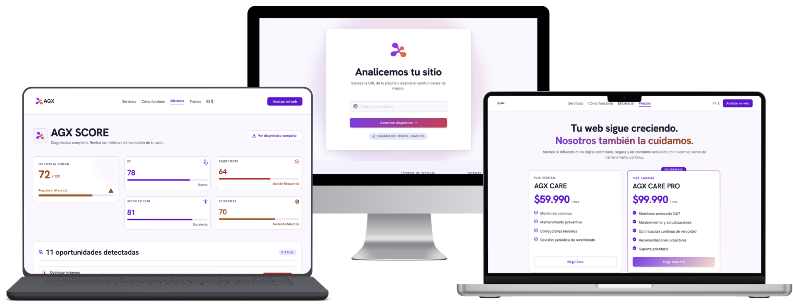
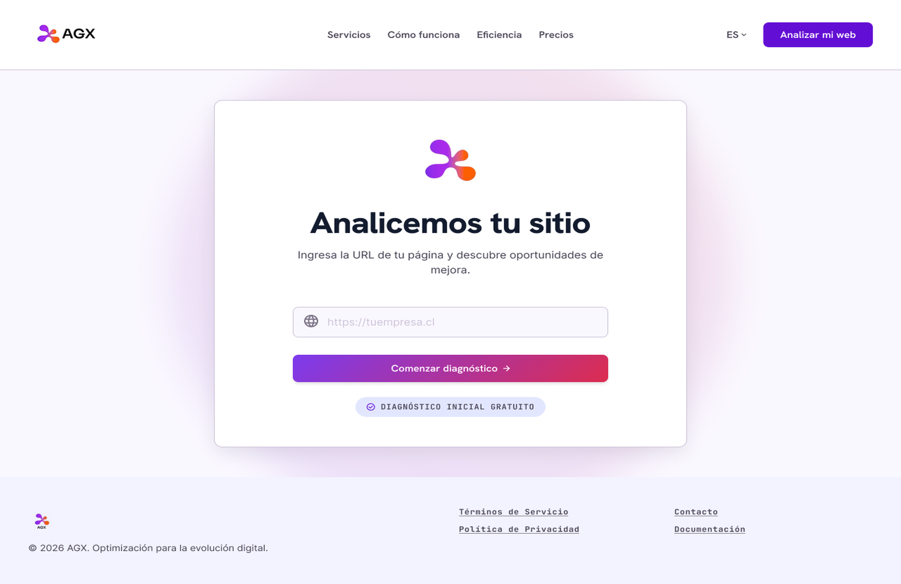
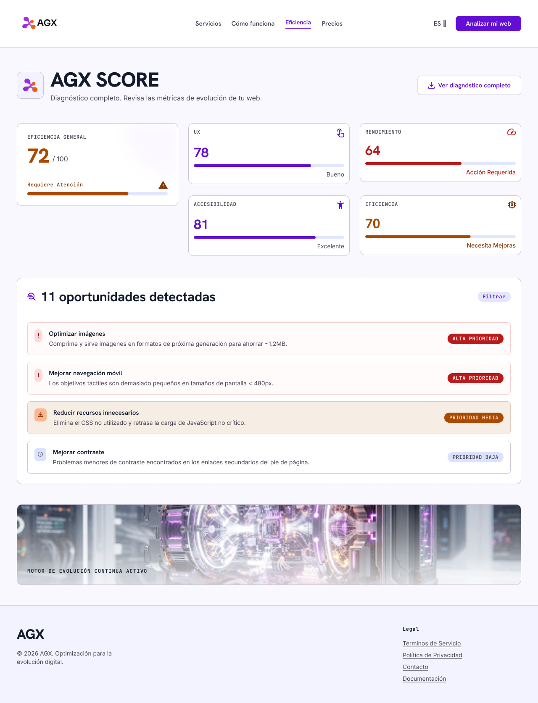
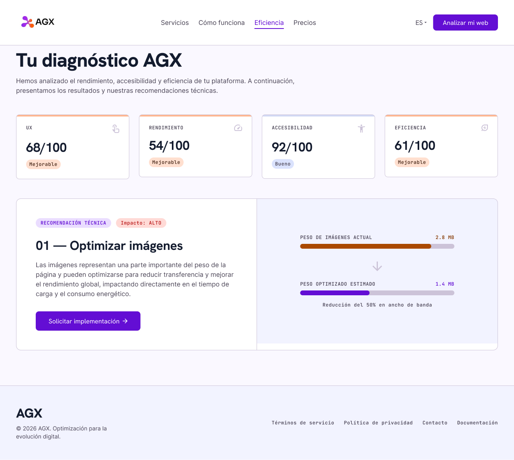
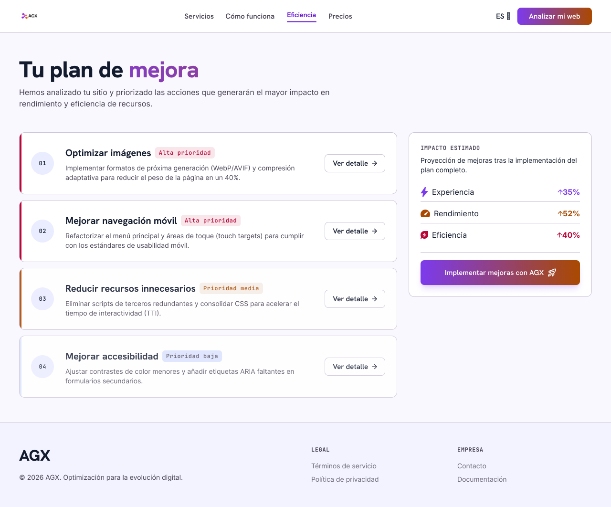
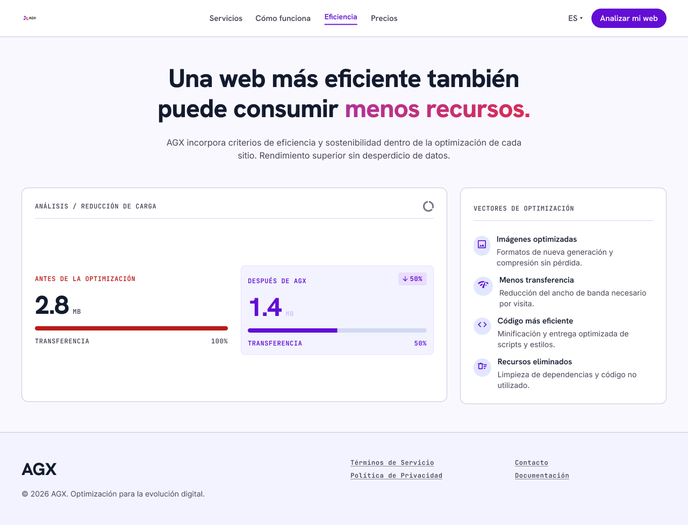

AGX
Diagnóstico y mejoras para plataformas digitales existentes.
Más sobre el proyecto
Emprendimiento digital / En desarrollo · Prototipo
AGX está en desarrollo. Las pantallas son propuestas de diseño: las métricas, resultados, precios y acciones que aparecen en los mockups son ilustrativos y no demuestran un servicio operativo.
Fuente: informe AGX y pantallas del prototipo.
Tu plataforma no siempre necesita empezar de cero.
AGX propone transformar información técnica en una ruta clara para mejorar experiencias digitales existentes.
Entender para evolucionar.
Una propuesta de diagnóstico para empresas que ya cuentan con una web, e-commerce o plataforma digital.
El problema
Una plataforma puede seguir funcionando y, aun así, presentar dificultades de rendimiento, experiencia o accesibilidad. Los datos técnicos dispersos no siempre ayudan a decidir qué mejorar primero.
La oportunidad
Reunir distintas dimensiones en una experiencia comprensible y proponer mejoras priorizadas permite valorar lo que ya funciona antes de considerar una reconstrucción completa.
Para quienes hacen crecer lo digital.
La propuesta está dirigida a personas y equipos que necesitan comprender y mejorar plataformas existentes.
- PYMES y empresas con presencia digital.
- Negocios con sitios web o e-commerce que necesitan optimizar su funcionamiento.
- Equipos de diseño, marketing y tecnología.
- Profesionales que gestionan plataformas digitales existentes.
De datos a decisiones.
AGX busca conectar diagnóstico, interpretación y priorización para facilitar una evolución progresiva.
Una mirada integrada
Considerar rendimiento, UX, accesibilidad y eficiencia digital en una misma propuesta.
Prioridades claras
Traducir los hallazgos en recomendaciones ordenadas según su impacto y urgencia.
Mejorar lo existente
Identificar oportunidades de optimización sin asumir que hay que partir desde cero.
Una idea en evolución.
El siguiente paso planteado en el informe es validar el prototipo con empresas y conocer qué partes de la propuesta aportan mayor valor.
Galería
Una experiencia para decidir: las pantallas exploran cómo presentar el diagnóstico y una posible ruta de mejora.





